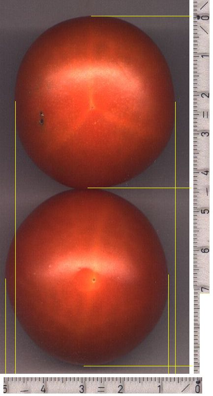
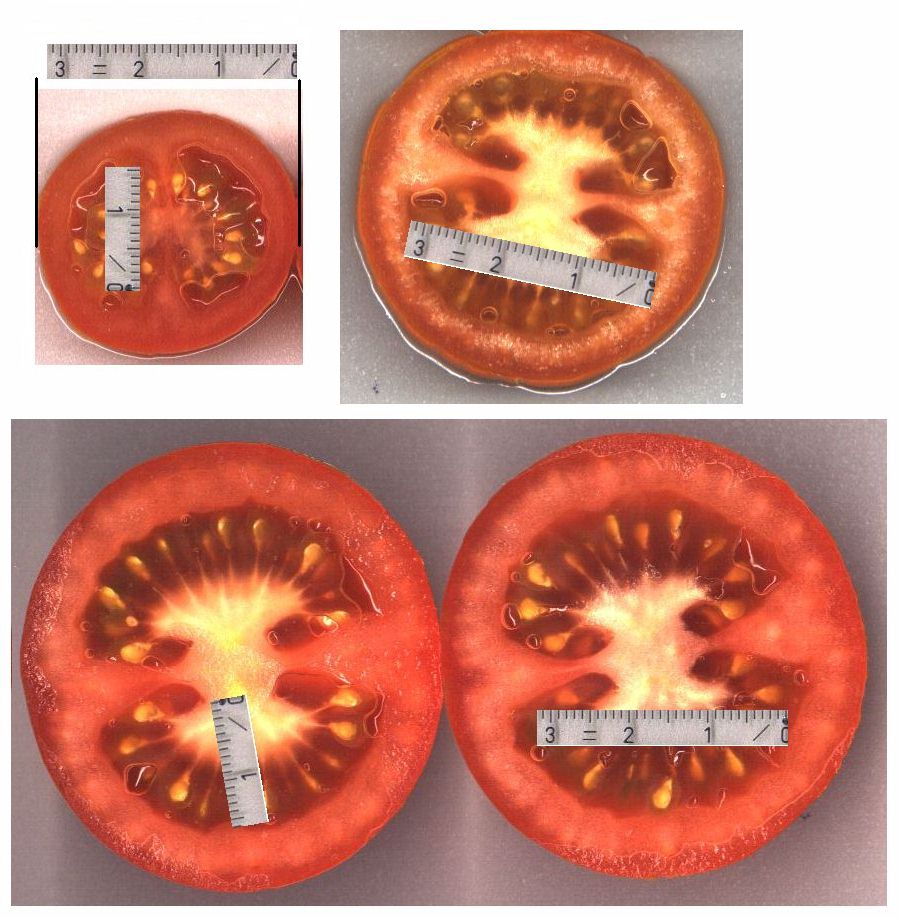
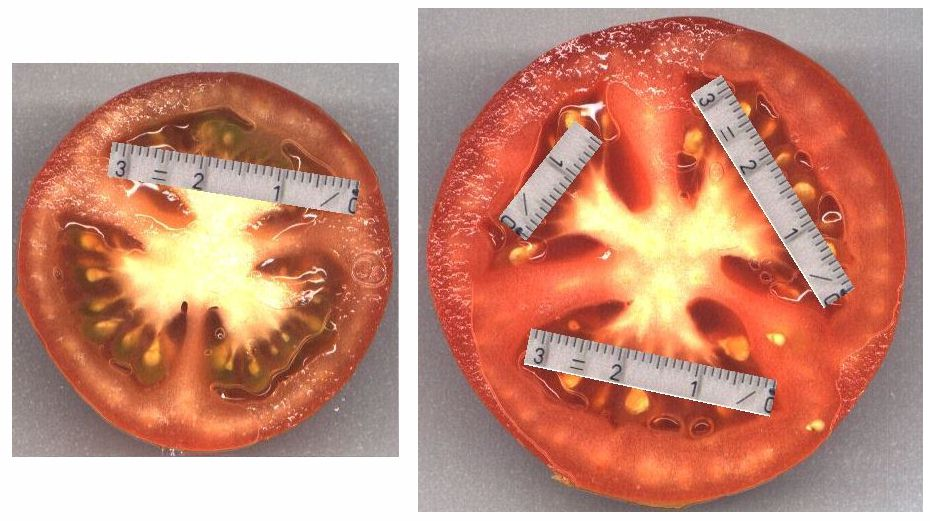
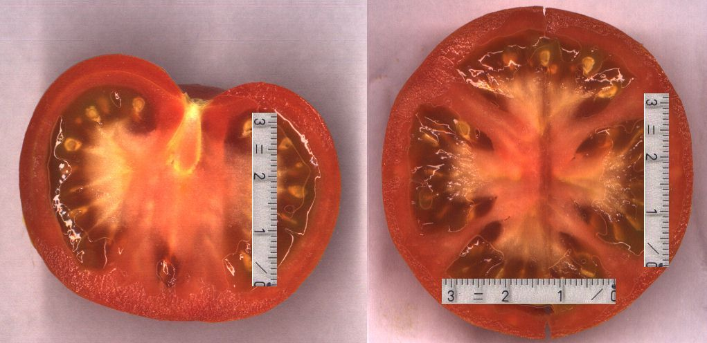
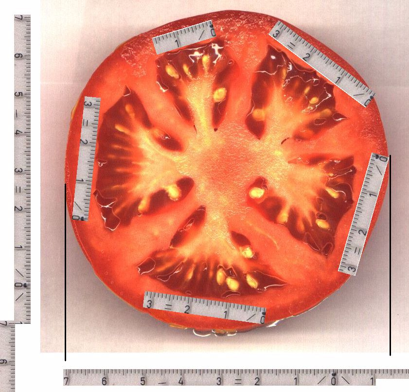
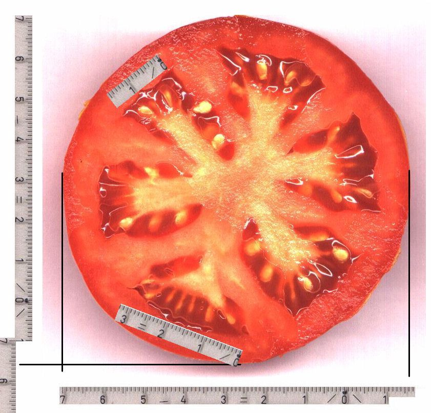
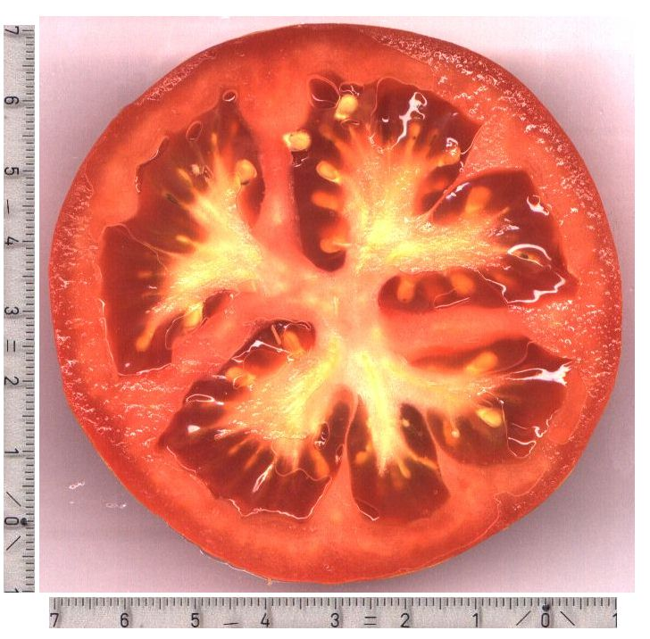
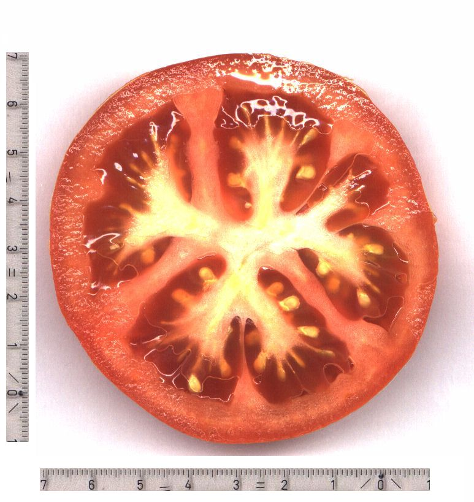

|
Von außen erkennt man schon die innere Struktur: oben dreifach,
unten zweifach

Hier eine Zweiteilung (alles Querschnitte):

Hier eine Dreiteilung (alles Querschnitte):

Hier eine Vierteilung (Längs- und Querschnitt):

Und hier eine Fünferteilung (Fleischtomate, Querschnitt)):

Hier hier die Sechserteilung (Fleischtomate, Querschnitt):

Hier eine Fleischtomate (beide Hälften), die den Teilungsvorgang
zeigt. Die Mitose bei der Zellteilung wird bestimmt auch nicht genetisch
ausgelöst, sondern resonanz-natürlich (beinahe hätte ich 'physikalisch'
geschrieben).
Durch die Samen wird eine Energiespirale gehen, die in die ganze
Frucht gefaltet ist.


|